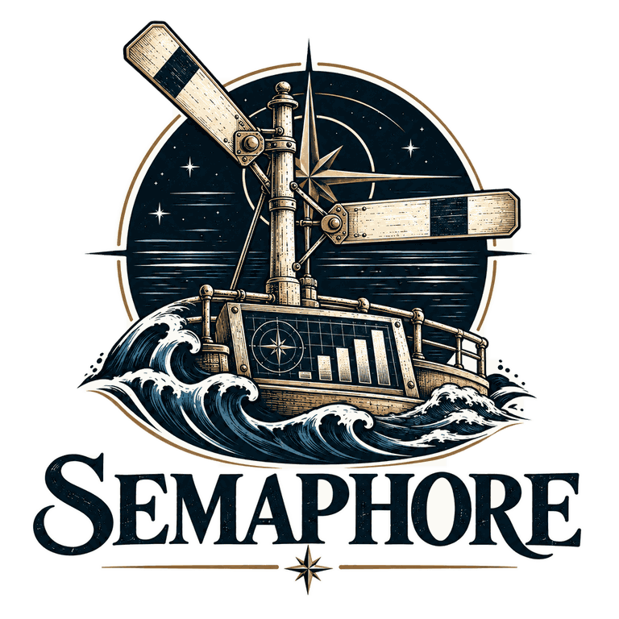
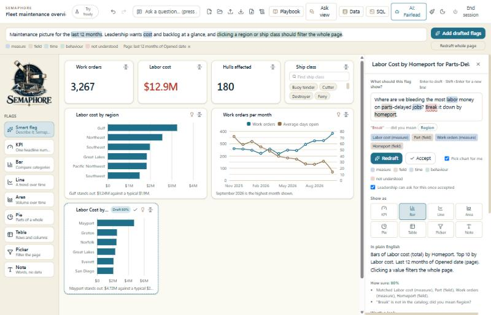
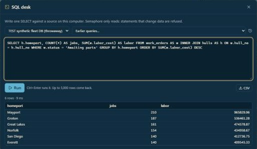
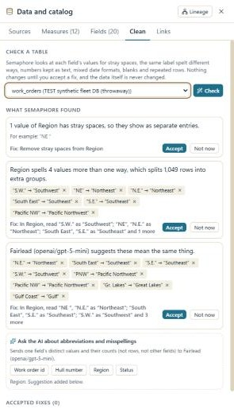

Bottom line. Semaphore connected to a real database with nothing installed, found the join between two tables on its own, and ran correct queries. Through Fairlead it drafted a correct chart from a plain-English question using both a commercial model (OpenAI) and a free one (NVIDIA Nemotron on OpenRouter). The test found six defects; all six are fixed and covered by tests.
The local model on the workstation is not yet good enough to draft on its own, but its cleaning suggestions help, and the built-in rules work with no model at all.
Semaphore is a dashboard builder for analysts on standard Navy workstations. It is written in PowerShell 5.1 and runs in the browser, with no installation, no admin rights and no license. An analyst describes a chart in plain English and Semaphore drafts it, shows the exact SQL, and lets leadership ask questions answered from the analysts' reviewed work. It aims to cover the everyday Qlik workflow (sheets, master measures, associative filtering, reload tasks) as a no-cost alternative.
AI goes through Fairlead, the Fleet's model router: one local address that sends each request to a local model or an approved cloud model. Models see only the analyst's words and the catalog's labels, never data rows. The one exception is a cleaning request, which sends one field's distinct labels, and only when the analyst asks. Semaphore writes every SQL query itself, so a model can never invent a number.
gpt-5-mini, and NVIDIA Nemotron 3 Ultra (free) on OpenRouter, held to an allow-list of free models.| Check | Result |
|---|---|
| Connect to the database and list its tables | Pass |
| Profile a table and propose measures and fields | Pass. It correctly treated the work order ID as an identifier, not a number to add up. |
| Find how the tables connect | Pass. "Each work order belongs to one hull", with all 120 of 120 hull numbers matching. |
| Run a hand-written join query (SQL desk) | Pass. 6 rows in 9 ms. |
Refuse a query that would change data (DELETE) | Pass. "Only a single SELECT statement is allowed." |
| Find messy labels with built-in rules | Pass. 6 of the 10 misspellings and a stray space, covering 1,049 rows. Nothing changes until the analyst accepts. |
| Local (Ollama) | OpenAI gpt-5-mini | OpenRouter Nemotron 3 Ultra (free) | |
|---|---|---|---|
| Time to draft | ≈ 2.5 min | ≈ 20–30 s | ≈ 90 s |
| Chose the right table | No | Yes, and said why | Yes |
| Chart drafted | A single total from the wrong table | Labor cost and work orders by homeport | Labor cost by homeport, top 10 |
| Right answer (Mayport highest) | No | Yes: $4.72M against a typical $2.39M | Yes: $4.72M against a typical $2.39M |
| "Parts-delayed" filter | Not applied | Not applied, and said so | Not applied, and said so |
| Misspellings found by AI cleaning (of 10) | 7 | 9 | 8 |
Every draft is labelled with the model that made it and a confidence score, and stays a suggestion until an analyst accepts it. None of the models could map "parts-delayed" to the status value "Awaiting parts", because by design they never see the values in a field (see open items).

| # | Defect | Effect | Fix |
|---|---|---|---|
| 1 | Started from a PowerShell 7 window, the 5.1 launcher loaded PowerShell 7's modules | Semaphore would not start | The launcher ignores PowerShell 7's module folders |
| 2 | OpenAI's newest models reject a setting Semaphore sent (temperature: 0) | Every OpenAI draft quietly fell back to the built-in rules | Ask again with the model's default setting |
| 3 | A draft could mix measures and fields from two databases | The chart stopped with an error | Keep one database, swap in the same-named measure, drop the rest with a note |
| 4 | Models added red/amber colour rules nobody asked for, and rated themselves 90% sure | Misleading drafts | Uninvited colour rules dropped; a model's own confidence capped at 80% |
| 5 | The model was never told what "Pick chart for me" means | It kept drawing a single number | The prompt now explains it, and says to pick the database that has everything asked for |
| 6 | A chart left with nothing to split by crashed the drawing code | The whole page went blank | The chart shows its total, and any flag that fails says so in its own card |


Synthetic data only: no real Navy, personnel or operational data was used. The cloud models received the analyst's question, catalog labels and the made-up region spellings. Code: github.com/fleethacker-data-crucible/Semaphore, pull request #13.